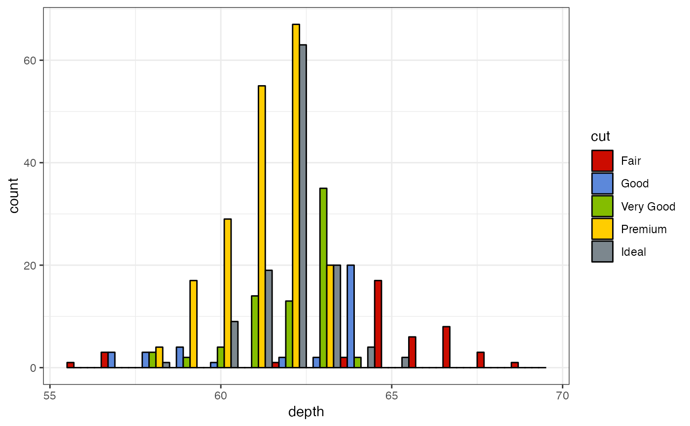

See pal_startrek for details.
scale_color_startrek(palette = c("uniform"), alpha = 1, ...) scale_colour_startrek(palette = c("uniform"), alpha = 1, ...) scale_fill_startrek(palette = c("uniform"), alpha = 1, ...)
Arguments
| palette | Palette type.
Currently there is one available option: |
|---|---|
| alpha | Transparency level, a real number in (0, 1].
See |
| ... | additional parameters for |
Examples
library("ggplot2") data("diamonds") ggplot(subset(diamonds, carat >= 2.2), aes(x = table, y = price, colour = cut)) + geom_point(alpha = 0.7) + geom_smooth(method = "loess", alpha = 0.1, size = 1, span = 1) + theme_bw() + scale_color_startrek()ggplot(subset(diamonds, carat > 2.2 & depth > 55 & depth < 70), aes(x = depth, fill = cut)) + geom_histogram(colour = "black", binwidth = 1, position = "dodge") + theme_bw() + scale_fill_startrek()